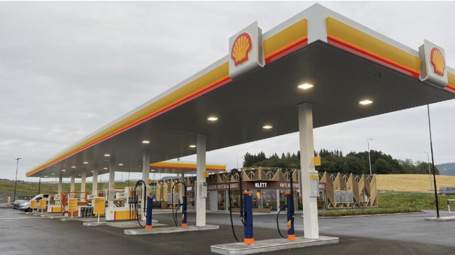

Introduction
The transportation sector plays a huge role in global greenhouse gas emissions, making up about 28% of worldwide CO₂ output in 2022 (United States Environmental Protection Agency). Within this sector, road vehicles (cars, buses, and trucks) are the main source, generating nearly three fourth of all transport-related emissions. Passenger vehicles alone, such as cars and buses, contribute roughly 45% of these emissions (Ritchie & Roser, 2020). This heavy dependence on gasoline and diesel powered transport has led to transportation being a major driver of climate change. To keep global warming below 1.5°C, experts estimate that emissions from the transportation sector must fall by at least 80% by 2050, with the largest reductions expected from passenger cars.
Emissions from vehicles that run on gasoline or diesel (also known as ICEVs) don’t just contribute to climate change, but they also have serious consequences on public health. According to the World Health Organization, air pollution from vehicle exhausts is a major factor behind respiratory illnesses, heart disease, and even early deaths across the globe.
Switching to electric vehicles (EVs) is widely seen as one of the best ways to cut down on emissions from transportation. Battery electric vehicles (BEVs), in particular, are a preferred alternative to ICEVs because they don’t produce tailpipe emissions and help reduce our dependence on gasoline and diesel. In recent years, improvements in battery technology, more charging stations, and conducive government policies have made BEVs more appealing to customers. As a result, BEVs are becoming an increasingly important part of efforts to lower emissions from the transportation sector.
Switching to BEVs is a practical way to cut greenhouse gas emissions and tackle climate change. Electric cars don’t produce tailpipe pollution and use less fossil fuel, so they can help make transportation cleaner and more sustainable. There are still hurdles to overcome like the environmental cost of making batteries, building enough charging stations, and making sure the cost is low enough for widespread adoption. Nonetheless, when electric vehicles are powered by renewable energy, their advantages greatly outweigh the downsides. Hence, we believe BEVs are likely to play a key role in moving toward a low-carbon future.
The Proposed Strategy – Pros
Our research finds that aligning with Paris Agreement targets will require phasing out sales of new ICEVs by the year 2035. However, the transition to BEVs need not wait for future power sector improvements because BEVs already have lower life-cycle emissions compared to similar ICEVs, even in geographies where a large proportion of electricity is generated using coal and other non-renewable methods (Bieker, 2021).
In Europe, medium-size EVs emitted 66-69% lower emissions than similar ICEVs in 2021, with projections reaching 74-77% by 2030. In the US, the reduction was 60-68% in 2021, expected to reach 62-76% by 2030. These figures vary by region, with cleaner electricity grids amplifying the benefits. This advantage comes from zero tailpipe emissions during use, offsetting higher emissions while manufacturing due to the battery. In countries with a low proportion of electricity generated through renewables, like India, the gap is smaller but still significant. As grids decarbonize, these benefits are expected to grow, with studies suggesting EVs will continue to outperform gasoline cars over time (Bieker, 2021).
A study conducted by Cotes also found that the total carbon footprint of an ICEV quickly overtakes that of an EV after 15,000 miles of driving. It takes a typical EV about one year in operation to achieve "carbon parity" with an ICE vehicle. If the EV draws electricity from a largely coal powered grid, however, the catchup period stretches to more than five years. If the grid is powered by carbon/free hydroelectricity, the catchup period is only about six months (Cotes, 2023).
Another advantage of BEVs is that they significantly reduce urban air pollution by eliminating tailpipe emissions, such as nitrogen oxides (NOx) and fine particulate matter (PM2.5), which are the two main pollutants in urban areas. Research from the Keck School of Medicine of USC looked at California data from 2013 to 2019 and found that for every 20 more BEVs per 1,000 people, asthma-related emergency room visits dropped by 3.2%. This points to a clear connection between more EVs on the road and better air quality, especially for respiratory health.
The health benefits of this cleaner air are extremely significant, particularly in reducing respiratory issues. The American Lung Association projects that if all vehicles in the nation shift to zero-emissions by 2035, it could prevent 89,300 premature deaths, 2.2 million asthma attacks, and 10.7 million lost workdays by 2050, yielding $978 billion in public health benefits from 2020 to 2050.
The Proposed Strategy – Cons
While the widespread adoption of BEVs could be a promising step toward decarbonizing transportation, there are a few issues that must be addressed beforehand. One limitation is that EVs currently have higher initial purchase prices compared to ICEVs, largely due to the cost of batteries. The batteries used in EVs can cost around ten times more than those in gas-powered vehicles, increasing retail prices and limiting accessibility for potential customers (Chapter 10: Transport).
Another issue is the high reports of something known as “range anxiety”, which is the fear of running out of battery without access to a charger. Most BEVs today have a range of about 200-400 km, which might be sufficient for local driving but not sufficient for long road trips (IEA). Additionally, there is a limited availability of charging stations, especially in rural and underserved areas, making long road trips almost impossible and potentially deterring people from purchasing an EV.
EVs also require longer to charge. While ICEVs take under five minutes to refuel, EVs can take anywhere from 30 minutes to several hours, depending on how the vehicle is being charged (Oreizi, 2021). This inconvenience may be a deterrent for people who are used to quick fuel stops.
Although EVs do not produce tailpipe emissions, the environmental cost of producing lithium batteries remains a major issue. Mining for lithium and other battery materials emits greenhouse gases, disturbs ecosystems, and raises concerns about the poor labor conditions in certain mining regions (MIT Climate Portal). These environmental effects counteract some of the benefits of switching to EVs.
The drawbacks of EVs, such as limited driving range, longer charging times, environmental impacts from battery production, and high initial costs, raise valid concerns. However, many of these issues are being addressed through rapid technological advancements.
Emerging battery technologies reduce dependence on environmentally costly materials like lithium, cobalt, and nickel. Solid-state batteries and lithium-iron-phosphate chemistries, for example, offer promising alternatives that are more sustainable and less resource-intensive (Jose et al., 2025).
In addition, battery costs have dropped significantly from 2010 to 2024, making EVs more affordable. Given this pattern, we can expect a further decrease in battery costs over the next couple of years as well.
Even in regions that rely heavily on coal-fired power generation, EVs show lower lifetime emissions than comparable ICEVs. This advantage stems from the cleaner nature of electricity compared to burning gasoline (Reichmuth & Dunn, 2025).
Ultimately, these improvements suggest that the cons of EVs are temporary. As advancements continue, the problems of widespread EV adoption will become insignificant, making electric vehicles a cleaner option for drivers.
Successful Implementations
Several nations have already shown great success in implementing electric vehicles, showing that encouraging electric vehicles through policy and infrastructure can be an effective way to combat climate change. One example is Norway, which tops the world in EV market shares, with more than 80% of new cars sold in 2022 being electric. Joel Jaeger explains, “Norway’s EV success story didn’t happen overnight, it is the result of consistent policy efforts over decades” (Jaeger, 2023). These efforts include generous tax exemptions, free or reduced tolls, access to bus lanes, and significant public investment in charging infrastructure. Norway has moved from fossil-fuel reliance to electricity by making EVs both reasonable and useful at an unprecedented scale (Jaeger, 2023).
China represents another example of effective nation-level implementation. In 2022, over 5 million electric vehicles were sold in China, accounting for nearly 60% of all EVs sold globally (“EV Sales by Country,” ). This rapid growth is the result of aggressive government policies such as purchase subsidies, priority licensing, and an immense push to grow the domestic EV and battery manufacturing industries. As Jaeger notes, China's success is rooted in “massive investment in manufacturing and infrastructure,” which has not only increased EV adoption domestically, but also helped lower the cost of EVs globally by scaling up production and innovation (Jaeger, 2023).
The Netherlands provides a third example of successful implementation, due to its government heavily investing in infrastructure and providing incentives for corporate fleet electrification. With more than 100,000 public charging ports, the Netherlands has one of the most comprehensive charging networks in the world, eliminating range anxiety, one of the main obstacles to EV adoption (Jaeger, 2023). Both private consumers and businesses have been further encouraged to transition to EVs through tax incentives and favorable leasing programs. As a result, EVs accounted for around 30% of all new car sales in the Netherlands in 2022 (“EV Sales by Country,” n.d.).
These examples highlight the importance of national commitment. The U.S. has made some strides in EV development, but due to fragmented policies and slower infrastructure deployment, it still lags behind global leaders (Pierce). There has been regional progress through state-level programs like California’s zero-emission vehicle mandate, but a lack of a federal strategy has made it difficult to replicate the success with EVs seen in countries like Norway and China. However, recent initiatives such as the Inflation Reduction Act of 2022 suggest a potential shift toward more comprehensive EV policy in the U.S., including expanded tax credits and large investments in nationwide charging infrastructure.
Overall, these examples show that EV adoption is not just dependent on consumer preference, but is highly dependent on government policies. By studying the policy frameworks of successful countries, other nations can develop their own strategies to reduce emissions from transportation, a crucial step in addressing the global climate crisis.
Conclusion
As climate change effects trend in the wrong direction, it is more important than ever to take steps to combat it. A global benchmark has been set of keeping global warming below 1.5°C highlights the importance of finding sustainable pathways to reduce greenhouse gas emissions. Electrifying passenger vehicles is a main and effective strategy currently being implemented. Research shows significant GHG reductions potential, especially with decarbonized grids. Adoption is very feasible and already in effect with relevant policies as seen in countries like China and Norway, but challenges like infrastructure and costs require coordinated efforts. The strategy's success depends on various factors such as large-scale EV adoption and the necessary infrastructure improvements like widespread charging stations. Future research should focus on scaling battery recycling and grid decarbonization to maximize benefits. If the world reaches its goal of keeping global warming below 1.5°C, electrifying passenger vehicles should and will play a big factor in achieving it.